Dungeon Architect User Guide
for Unreal Engine 4
- Introduction
- Installation
- Generation Overview
- Dungeon Actor
- Dungeon Builders
- Theme Overview
- Theme Editor
- Theme Nodes
- Theme Node Properties
- Rules
- Paint Mode
- Volumes
- Marker Emitters
- Spatial Constraints
- Clustered Theming
- Query Interface
- Access the Query Interface
- Grid Query Interface
- Get Cells
- Get Cells Of Type
- Get Cell Dimension
- Get Path Between Cells
- Get Furthest Rooms
- Get Cell At Location
- Get Cell Type
- Get Random Cell
- Get Random Cell Of Type
- Contains Stair Between
- Contains Door Between
- Get Stair Between
- Get Opening Point Between Adjacent Cells
- Get Adjacent Cells On Edge
- Is Near Marker
- Spawn Logic
- Event Listeners
- Landscape Transformer
- Navigation
- Advanced
Introduction
Dungeon Architect is a plugin for Unreal Engine 4 Editor that helps in streamlining the level creation process. It allows you to quickly create levels procedurally (or manually) by blocking out volumes and having the plugin build the environment automatically around it.
This document introduces you to the various features of Dungeon Architect and guides you through the creation of a simple level
Installation
Marketplace Installation: Install the plugin from the marketplace using the launcher as usual
Manual Installation: If you have purchased your copy of Dungeon Architect from Code Respawn, you can download the latest build at any time and install it into your project with the following steps
- In your game’s root directory, create a folder named Plugins
- Copy the DungeonArchitect folder found in this archive under Plugin/4.X/ into your game’s plugin folder (which was created in step 1). For example, in the ShooterGame sample demo, the directory structure should look like this: 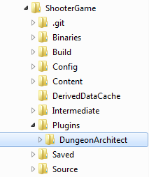
- Restart the Unreal Editor (if already open) and verify that Dungeon Architect is enabled by navigating to Window Menu > Plugins. 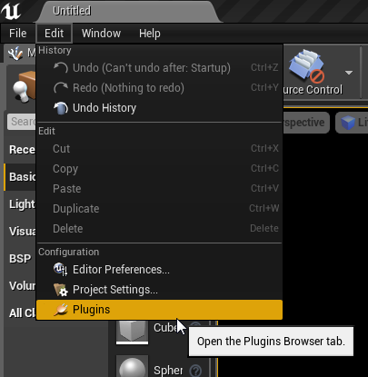
- Confirm that Dungeon Architect is visible and enabled

Generation Overview
A dungeon is generated in two phases
- Layout Generation
- Visual Generation
Architecture
Layout Generation
In this phase, only the layout of the dungeon is generated in memory. No meshes or actors are actually spawned.

Layout of the dungeon in memory
Next, the level is populated with invisible points called Markers around the generated layout. A marker has only a name and a transformation in the 3D space.

Markers populated for a sample room
In the above image, after the layout has been built, the dungeon builder has populated the level with marker points around the layout of the dungeon
Visual Generation
This phase spawns the actors in your scene. It takes all the marker points inserted in the previous phase and replaces them with actors (meshes, lights, blueprints etc) that you have mapped in your theme files
Actors spawned by a theme mapping
The theming engine is executed for each marker inserted in the Layout generation phase. In the above example, when a Ground marker is encountered, it would look for a Ground marker mapping in your theme file and replace the marker with the meshes you have mapped to it

Result after theme mapping
The advantage of this data driven theme based approach is that theme files can be swapped to give your dungeon a completly different look. Theme files can also be shared across mulitple projects / teams
Multiple themes can also be used within the same dungeon to create variations
Dungeon Actor
A dungeon actor is used to build your dungeons. Drop a dungeon actor into the scene and reset its transform

Dungeon Actors
The dungeon actor generate a procedural layout for your dungeon based on the various configuration paramters.
After the layout has been generated, it spawns meshes, lights, blueprints etc, based on the mappings you have defined in the Theme file. This way you can define what meshes needs to be attached to the floors, walls, ceilings, etc
Properties
The Dungeon actor lets you perform various actions on your procedural dungeon. Select the Dungeon Actor and have a look at the Dungeon category under the details window
Dungeon Actor Properties
Build Dungeon: Builds a procedural dungeon. You need to define atleast one theme before you build
Destroy Dungeon: Destroys an existing dungeon owned by this actor. If you want to rebuild a dungeon after modifying the theme, there is no need to destroy first and you can directly click build
Randomize Seed: A convenience function that changes the seed in the configuration. Changing the seed would completly change the layout of your dungeon
Builder Class: A builder is responsible for creating the layout of your dungeon. It contains the method and techniques to design your dungeon. There are different types of builders available
- Grid: Create complex dungeons with this builder. It supports height variations, stairs, rooms and corridors
- FloorPlan: Creates floor plans for your building interiors
- Isaac: Creates dungeon layout similar to the game Binding of Isaac. It also supports decorators to further beautify the layout
- Snap: Create your modules (rooms) in separate levels and this builder generates a dungeon with these modules by stitching them together
Config: The configuration category changes based on the structure your select. Hover your mouse pointer over the various fields for more info
Themes: A theme file lets you design the look and feel of your dungeon. There’s an interactive editor that lets you design your own themes. You need to specify atleast one theme file before you can build your dungeon (quick start guide comes with many pre-created themes to get you started)
Marker Emitters: Dungeon Architect is designed to be modular and it contains many extension points so you can plugin in your own functionality using Blueprints or C++. Marker Emitters is one such extension point that lets you insert marker points in the scene, which your theme can later pick up replace with actors (like meshes, lights etc)
Dungeon Builders
A Dungeon Builder generates the layout of your dungeon. It contains the method and techniques to design your dungeon. There are multiple builders available and you can also create your own implementation if you wish (in blueprint or C++). This allows Dungeon Architect to be extensible and not restricted to a single dungeon layout technique

Dungeon Builder
Select a dungeon builder
Here we explore the various dungeon builders that ship with Dungeon Architect
Grid Builder
This builder creates complex and beautiful dungeons with rooms, cooridors and height variations.
This is the default builder used by Dungeon Architect
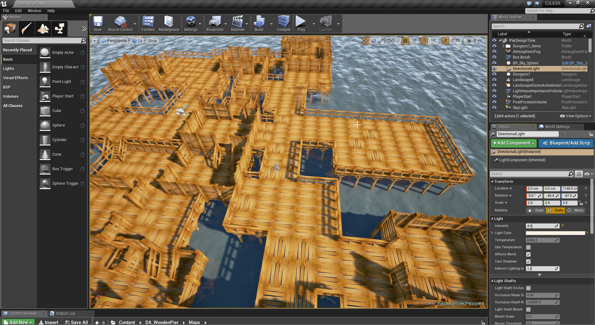 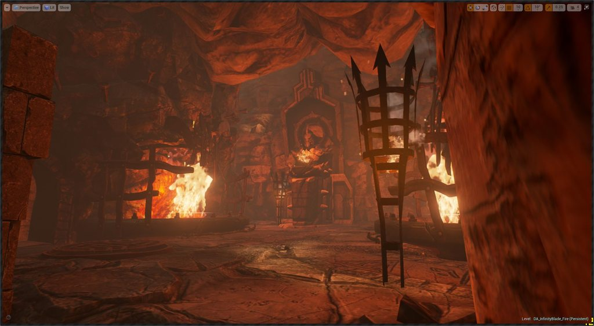  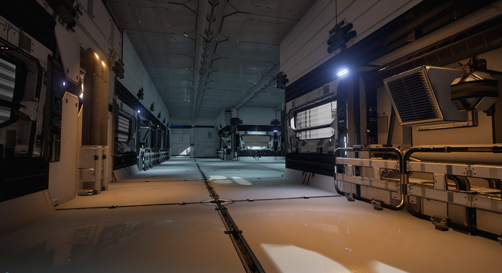 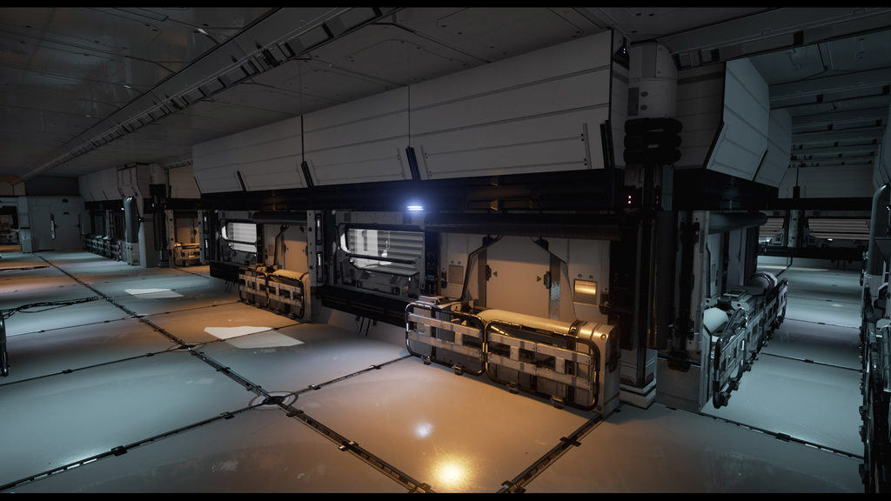 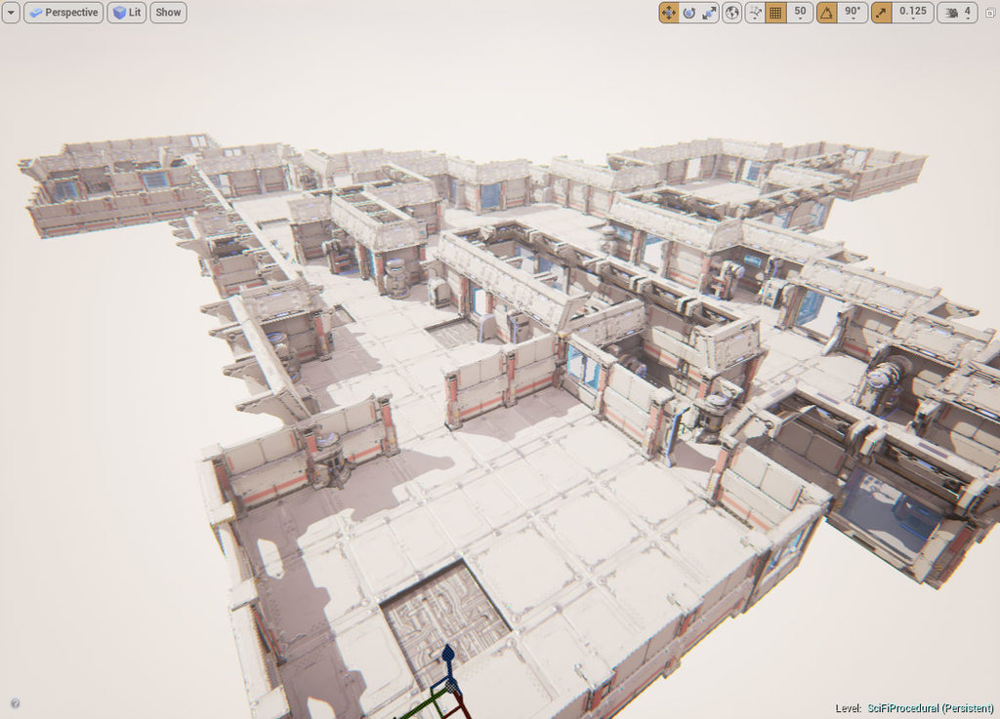
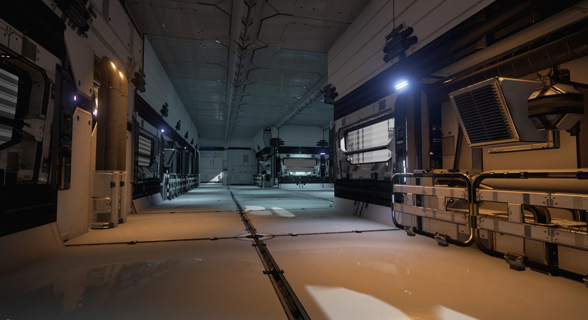 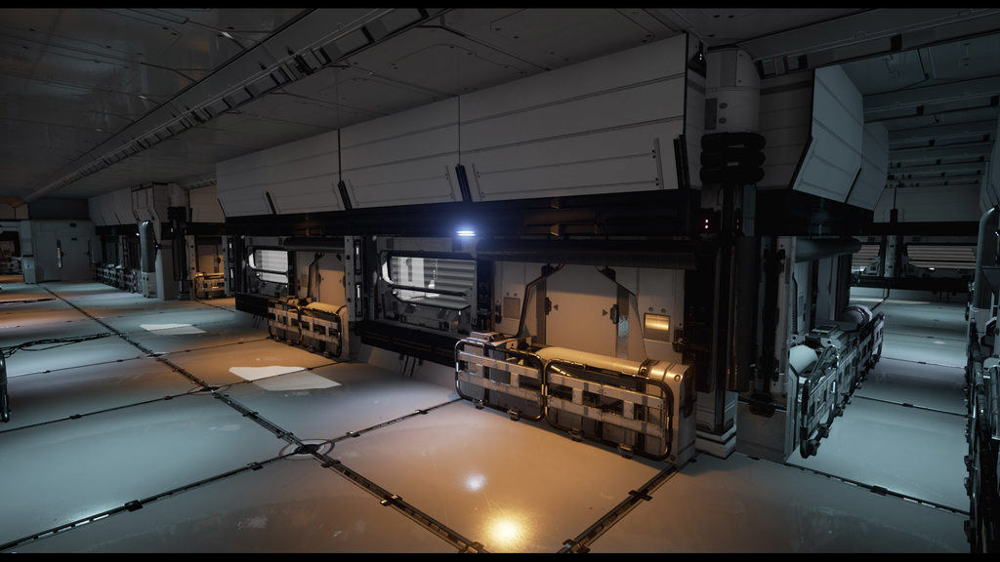 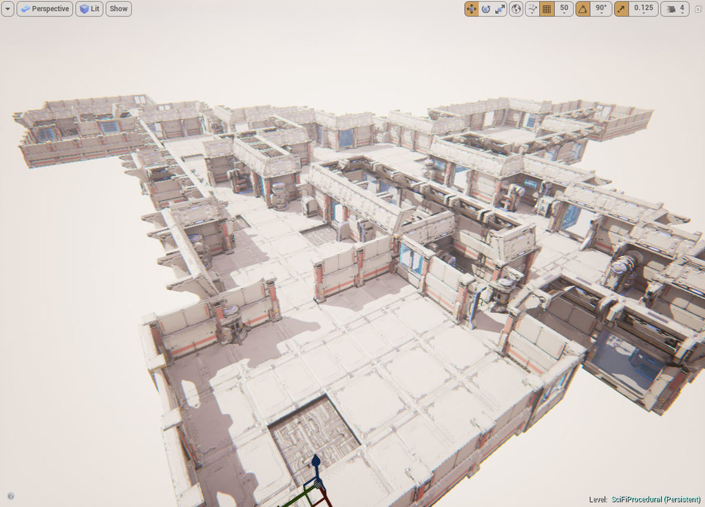
Configuration
Select the Dungeon Actor from the Details window
Dungeon Config Parameters
The various config parameters determine how the layout of the dungeon is generated procedurally. The default layout generator algorithm is implemented based on the excellent writeup by TinyKeep’s author Phi Dinh
The various parameters are:
- Seed: Changing this number would completely change the layout of the dungeon. This is the base random number seed that is used to build the dungeon
- Num Cells: The number of cells to use while building the dungeon. You will not see these cells in the final result. A larger number would create a bigger and more complex dungeon. A number of 100-150 builds a medium to large sized dungeon. Experiment with different ranges
- Min/Max Cell Size: This is how big or small a cell size can be. While generation, a cell is either converted to a room, corridor or is discarded completely. The Cell width / height is randomly chosen within this range
- Room Area Threshold: If a cell size exceeds past this limit, it is converted into a room. After cells are promoted to rooms, all rooms are connected to each other through corridors (either directly or indirectly. See spanning tree later)
- Room Aspect Delta: The aspect ratio of the cells (width to height ratio). Keeping this value near 0 would create square rooms. Bringing this close to 1 would create elongated / stretched rooms with a high width to height ratio
- Spanning Tree Loop: Determines how many loops you would like to have in your dungeon. A value near 0 will create fewer loops creating linear dungeons. A value near 1 would create lots of loops, which would look unoriginal. Its good to allow a few loops so a value close to zero (like 0.2 should be good)
- Stair Connection Tolerance: The generator would add stairs to make different areas of the dungeon accessible. However, we do not want too many stairs. For e.g., before adding a stair in a particular elevated area, the generator would check if this area is already accessible from a nearby stair. If so, it would not add it. This tolerance parameter determines how far to look for an existing path before we can add a stair. Play with this parameter if you see too many stairs close to each other, or too few
- Door Proximity Steps: Increase this value to remove nearby duplicate doors. This value determines how many cell we can move to reach the two connected cells of a door if the door was removed
- Height Variation Probability: Tweak this value to increase / reduce the height variations (and stairs) in your dungeon. A value close to 0 reduces the height variation and increases as you approach 1. Increasing this value to a higher level might create dungeons with no place for proper stair placement since there is too much height variation. A value of 0.2 to 0.4 seems good
- Normal Mean / Std: The random number generator used in the dungeon generator does not use a uniform distribution. Instead it uses a normal distribution to get higher frequency of lower values and fewer higher values (and hence fewer room cells and a lot more corridor cells). Play with these parameters for different results
- Grid Cell Size: The dungeon generator works on a grid based system and required modular mesh assets to be placed on each cell (floors, walls, doors etc). This important field specifies the size of the cell to use. This size is determined by the art asset used in the dungeon theme designed by the artist. In the demo, we have a floor mesh that is 400x400. The height of a floor is chosen to be 200 units as the stair mesh is 200 units high. Hence the defaults are set to 400x400x200. You should change this to the dimension of the modular asset your designer has created for the dungeon
- Max Allowed Stair Height: The number of logical floor units the dungeon height can vary. This determines how high the dungeon’s height can vary (e.g. max 2 floors high). Set this value depending on the stair meshes you designer has created. In the sample demo, there are two stair meshes, one 200 units high (1 floor) and another 400 units high (2 floors). So the default is set to 2
- Initial Room Radius: Internal Usage. Keep to a low value like 10-15
- Floor Height: Internal Usage. Ignored for now
- Instanced: Use mesh instancing for lower batch count
- Max Build Time Per Frame: The dungeon can be built over multiple frames so as to not hang the game (or the editor UI) while it is being built. This value determines how much time is spent on each frame to build the dungeon. Setting it to 0 would build the entire dungeon synchronously in a single frame. Settting to 33ms for eg, would build it over multiple frames. You get a callback notification when the dungeon build is complete
Floor Plan Builder
Create floor plans for your indoor buildings. This builder is a work in progress


 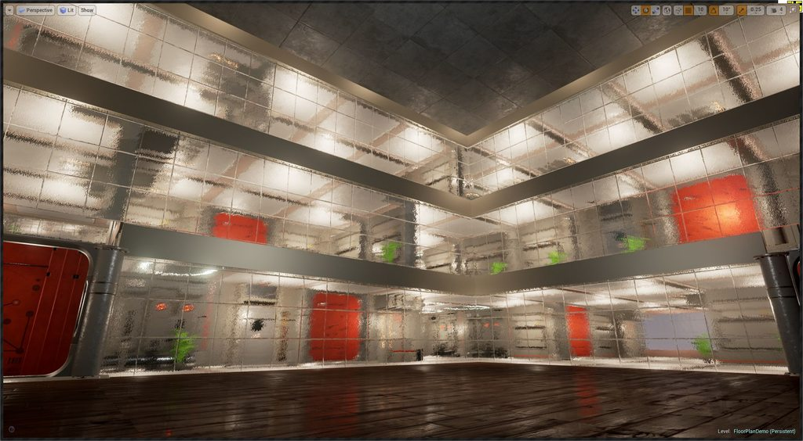 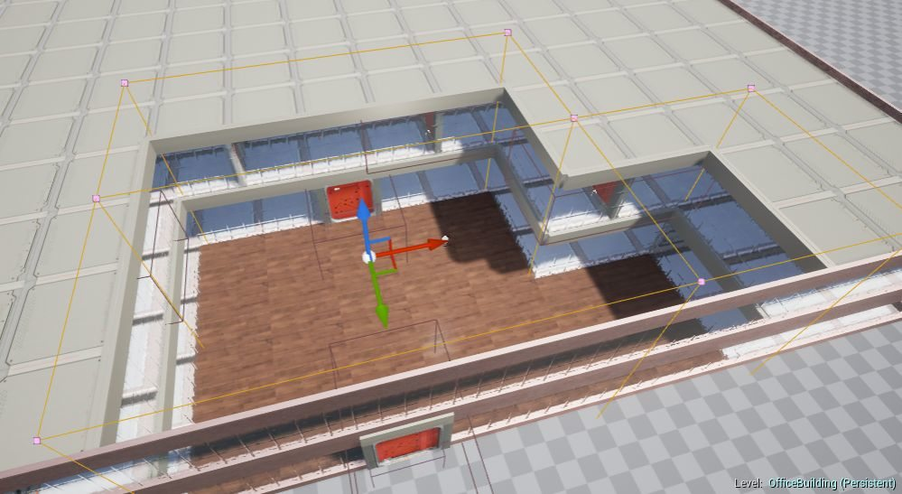
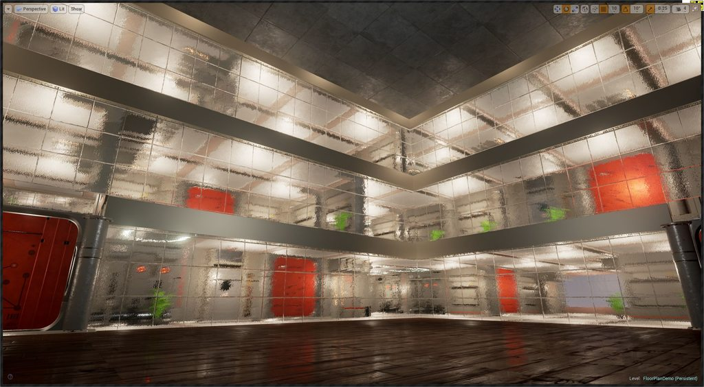 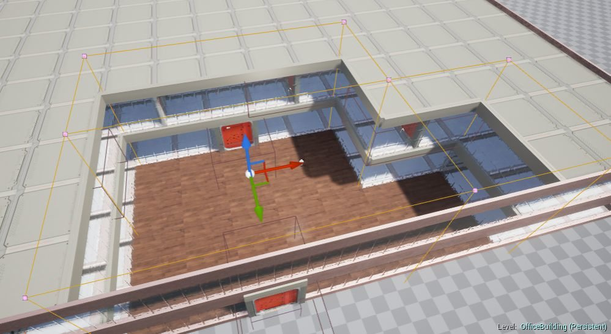
Configuration
Select the Dungeon Actor from the Details window
Dungeon Config Parameters
Seed: Changing this number would completely change the layout of the dungeon. This is the base random number seed that is used to build the dungeon
Building Size: This is the building size in logical “Grid” units. (see grid size below). Adjust this to change the size of your floor
Grid Size: The size of a tile in the floor map. The floor map is created in a tiled grid. Adjust the size here based on your art assets defined in the theme file
Min/Max Size: The minimum / maximum size of the room, in logical grid cooridnates
Hall Width: Every room is directly or indirectly connected to a hallway. This parameter controls the size of the hallway in grid coordinate
Min Room Chunk Area: Rooms are groups together with other rooms. However, they may be split with a hallway in between them if the combined area is greater than this value
Instanced: Use mesh instancing for lower batch count
Max Build Time Per Frame: The dungeon can be built over multiple frames so as to not hang the game (or the editor UI) while it is being built. This value determines how much time is spent on each frame to build the dungeon. Setting it to 0 would build the entire dungeon synchronously in a single frame. Settting to 33ms for eg, would build it over multiple frames. You get a callback notification when the dungeon build is complete
Simple City Builder
Create simple city layouts using this builder. This builder is a work in progress
Check the quick start samples for examples
City Builder
There’s a simple game that uses the city builder. The cities are procedurally generated using Dungeon Architect. In this game, Dungeon architect also spawns waypoints for the pedestrians to walk around the city
Zombie City Game Demo
Configuration
- CellSize: Defines the cell size of your city. This depends on your modular art asset used by the roads tiles and buildings
- MinCitySize: The minimum size of the city (in cell units)
- MaxCitySize: The maximum size of the city (in cell units)
- MinBlockSize: The minimum size of a city block (in cell units)
- MaxBlockSize: The maximum size of a city block (in cell units)
- BiggerHouseProbability: The house tiles are not restricted to 1x1 cell size. You can have larger dimension structures (e.g. stadiums, parking lots etc) that take up larger sizes e.g. 3x5, 2x4. This probabiliy defines how often that happens.
- RoadEdgeRemovalProbability: Some of the road edges are removed to create a more uneven and natural look rather than a rectangular grid like structure (refer city image above)
- CityBlockDimensions: Specify larger structured blocks here with their dimension (e.g. 2x3) and their marker name (e.g.
ParkingLot). You would then create a marker with this name and attach your larger mesh to it
Layout
Houses inaccessible to roads are promoted to Park. Houses also automatically face the roads. If your house mesh is not facing the road, try rotating it from the mesh node in the theme graph
Snap Builder
The snap builder allows you to stitch together custom designed rooms. This gives the artist full control on how an individual room looks like. These rooms are called Snap Modules.
Snap Modules are connected together through connection points called Snap Connections. Your modules will have various connection points (usually at the doors)
Check the quick start guide with a demo map with 20+ unique rooms
This builder is a work in progress and is not recommended for use in production yet
Layout
A simple layout is used for now where there is a linear path from start to end and a few side branches along the way. In the later updates, there will be multiple implementations of the layout algorithms and you should be able to swap between them
Configuration
Snap Dungeon Configuration
Seed: Changing this number would completely change the layout of the dungeon. This is the base random number seed that is used to build the dungeon
Modules: Here is where you register your room module assets. DA would use these modules as building blocks to build your dungeon
Start Modules: If specified, a module from this list would be used as the starting room [Not used for now]
End Modules: If specified, a module from this list would be used as the ending room [Not used for now]
Branch End Modules: If specified, a module from this list would be used as the branch end room [Not used for now]
Main Branch Size: The size of the main branch from start to end (in module count)
Collision Test Contraction: When the modules are stitched together, DA makes sure that the newly spawned module would not overlap with any of the existing spawned module. Setting this value to 0 would not spawn a module in locations with even the slightest overlap. Setting to 100 units for e.g., would tolerate an overlap of 100 Unreal units
Instanced: Use mesh instancing for lower batch count [Not used for now]
Max Build Time Per Frame: The dungeon can be built over multiple frames so as to not hang the game (or the editor UI) while it is being built. This value determines how much time is spent on each frame to build the dungeon. Setting it to 0 would build the entire dungeon synchronously in a single frame. Settting to 33ms for eg, would build it over multiple frames. You get a callback notification when the dungeon build is complete
Module Creation
Any normal actor blueprint can be used as a snap module. Since it is difficult to design the module inside the blueprint viewport, it is easier to create your room module in a separate level then convert it to a blueprint
Snap Connections
You modules need a way to connect to other modules. This is done using Snap Connections. Create a new snap connection blueprint by choosing SnapConnection as the base class
Snap Connection
Drop this snap connection blueprints in your module blueprint and position them accordingly.
This is an experimental feature and will change in the future
Isaac Builder
Generates levels similar to the game Binding of Isaac. This builder is a work in progress
Custom Grid Builder
This is based on the Grid Builder and allows you to define your own layouts easily from blueprints. It has various high level functions for placement of rooms and their corridor connections. If you are looking to define your own procedural layouts in blueprints, you might want to start here
Check the quick start samples for more info
Theming
To preview your custom builder in a theme file, open the theme in the Theme Editor and go to Properties > Dungeon
Preview Dungeon Properties
Assign your builder to the Builder Class property and the preview viewport should use your builder to build the preview dungeon
Builder Class
Theme Overview
A theme file lets you design the look and feel of you dungeons with an intuitive graph based approach
Themes are saved as a separate assets in the Content Browser. It also has an interactive editor to help you design beautiful levels
An example theme
Themes are used by the Theming Engine
Create a Theme
To create a new theme, right click in the content browser and choose “Dungeon Theme”
Create a dungeon theme
Theme Editor
Double click a dungeon theme asset to open it in the Theme Editor
A theme asset file
Dungeon Architect Theme Editor
Properties
The Theme editor exposes various properties that lets you customize the 3D viewport
Theme Editor Viewport Properties
Dungeon Property
An important property is Dungeon. Choose Dungeon from the list and the Details window will show the properties of the Dungeon actor used in the 3D viewport.
Theme Editor Dungeon Properties
Make sure you update the Grid Cell Size variable to match the dimensions of your modular assets so that the preview window can show them correctly
Debug Draw
Turn on the Debug Drawer to align the ground mesh with the layout. Sometimes the pivot of your ground mesh might not be in the center and you need to make sure it aligns properly with the layout so that it works nicely with other markers (Walls, Fence etc)
This example shows the ground mesh not aligned properly because the pivot of the mesh is in the corner of the mesh and is clearly visible when Debug Draw is turn on
Improper alignment of ground mesh
A simple adjustment in the Offset variable of the ground mesh node aligns it properly

Properly aligned with the ground mesh
Theme Nodes
A Theme can have 3 category of nodes
- Marker Nodes
- Visual Nodes
- Marker Emitter Nodes
Theme Node categories
Marker Nodes
After the layout generation phase, the scene would be scattered with invisible named points called Markers. Then, for every marker point in the scene, the theming engine looks for a corresponding Marker Node with that marker name. If found, it would start executing all the nodes defined below the marker node.
For e.g., if you have a marker node named Ground, it would be invoked for every Ground marker found in the scene. Once invoked, the theming engine executes all the nodes defined below it from left to right untill a certain condition is met
Ground Marker Node
In the above example:
- In the first phase, the layout builder has populated the map with ground markers, wherever a ground mesh was expected.
- Then in the next phase, the theming engine ecounters the
Groundmarker while iterating through all the markers in the scene - It then looks for a Marker Node named
Groundin the theme graph - Once found, it executes the visual nodes defined below it, starting from left to right
When you create a new theme asset, the theme graph comes with a set of default marker nodes.
You can define new marker nodes and build your own hierarcy for advanced theming
Names of custom marker nodes can be changed by double clicking on them, or from the details tab
Creating marker nodes
There are several ways to create a new marker node:
Right click anywhere in the empty area and expand the Dungeon category and click Add Marker Node 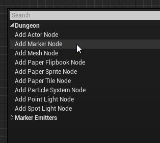
Alternatively, these context menu actions are also visible in the Actions tab. Drag and drop the Add Marker Node action into any empty area in the graph 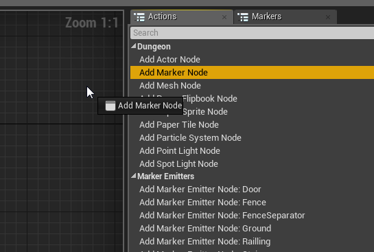
Visual Nodes
Visual nodes are used for spawning actors into the scene (e.g. meshes, lights, particle systems, blueprints etc). They are usually attached to a marker node and executed whenever an marker with that name is encountered in the scene. When executed, it spawns an actor defined within it and places it in the scene where the marker was encountered
You can create the following visual nodes:
- Mesh Node - Good for spawning static meshes.
- Point Light Node - Spawns point lights anywhere in your dungeon
- Spot Light Node - Spawns spot lights
- Particle Node - Spawns particle systems
- Actor Node - Spawn any type of actor by specifying it’s class
- Breakable Mesh Node - Spawns destructible meshes
If you have the Dungeon Architect Paper2D extension installed, then you can spawn additional visual nodes
- Paper Sprite Node - Good for spawning individual sprites
- Paper Flipbook Node - Spawn animated sprites
- Paper Tile Node - Spawn tiles extracted from a Paper2D tilemap. The editor gives you a user-friendly UI to select the tile from the tilemap
Creating visual nodes
There are several ways to create a new visual node:
Drag a link out of the marker node you intend to attach it on and select the appropriate visual node you desire 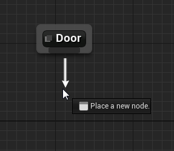

Choose a Visual Node from the filtered list
Alternatively, right click anywhere in the empty area and expand the Dungeon category and choose a visual node to create
Choose a Visual Node from the context menu
Alternatively, these context menu actions are also visible in the Actions tab. Drag and drop visual node action into any empty area in the graph 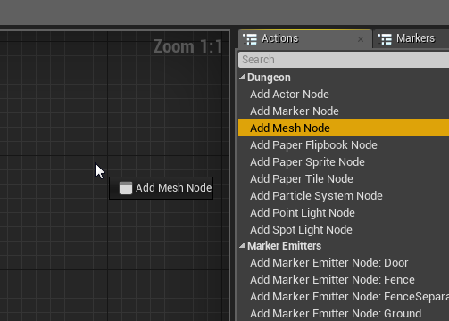
Marker Emitter Nodes
Marker Emitters emit new markers into the scene. These nodes are attached to visual nodes and if the parent visual node is executed, it would insert a named marker into the scene.
Marker Emitter nodes are similar in apperarance to Marker Nodes. However, they are purple in color and have an input pin, instead of an output pin
Sample theme file
In the above example, the Wall Marker has 3 Mesh nodes attached to it with probability such that any one for the 3 would be randomly chosen.
One of the 3 meshes has a window in it and we would like to decorate that mesh with curtains, but only if that node is selected. So, we define a new Marker named Window (can be any name) and attach curtain meshes to it. Then we emit a Window Marker Node from the desired visual node. Hence, if the mesh in the middle is executed, it would also insert a marker named Window in its position. Then the theming engine would execute everything beneath the Window marker and pick a random curtain and attach to the wall
This ability of defining your own hierarchy lets you design powerful themes for your levels
Creating marker emitter nodes
To create a Marker Emitter Node, drag a link out of a visual node and select a marker name you would like to emit
Choose a Marker to emit from the filtered context menu
Alternatively, right click anywhere in the empty area and expand the Marker Emitters category and click choose a marker to emit
Choose a Marker to emit from the context menu
Alternatively, these context menu actions are also visible in the Actions tab. Drag and drop visual node action into any empty area in the graph
Choose a Marker to emit from the Actions tab
Cycles
Cycles are not allowed when you emit markers as it doesn’t make sense to continuously emit markers in an infinite loop
The editor takes care of not allowing cycles and notifies you with a user-friendly message when you attempt to create a connection with a marker emitter that might cause a loop
Cycles not allowed
Theme Node Properties
A node in the theme graph can be customized from the Details Tab
Visual Nodes
Select a visual node (e.g. a mesh node) and have a look at the details tab:
Mesh Node properties
The properties that are common to all Visual nodes (Mesh, Blueprints, Lights, Particle, Sprite etc) are explained below:
Affinity: This is the probability of attachment. When this node is executed, the theming engine looks at this variable and rolls a dice and decides whether to insert this visual object into the scene or not. If this value is 1.0, then it would insert it 100% of the time. If the value is 0, then it would not insert it since selection probabiliyt 0%. If it is 0.5, then it would insert it 50% of the time
Consume on Attach: If the visual object was indeed spawned into the scene (based on the probability above), the theming engine would then look at this flag to decide if we need to execute the next sibling node. If it is checked, then execution stops for this marker. If it is unchecked, the next sibling gets processed. Affinity and Consume on Attach can be combined to create interesting possiblities in your theme
Offset: Apply transformation offset to your visual object relative to the marker location. This is a very useful property while designing your theme. If the pivot of the mesh your artist has designed isn’t where you wish it were, you can easily adjust it here to translate / rotate it around. You can also scale objects if they are too small / big. While designing your theme, you might be using this useful property to re-position your visual nodes, if required.
Selection Logic: Lets you define selection logic blueprints. You have seen an example above of node selected based on random probability (Affinity property). The selection process can be far more power than a simple random probability based selection. You can define you own blueprints and assign it here so you blueprint logic could decide if a node is to be selected or not. More details below
Transform Logic: In the Offset property as seen above, you can define a static offset transformation to move/scale/rotate the visual object from the marker position. With Transform Logic, you can define blueprint based transformation where you can provide dynamic tranform offsets based on a logic. For e.g., you might want to rotate/scale/translate a tree randomly to give natural variation instead of having them all face the same direction. More on this later
Mesh Node
A mesh not lets you place static meshes on the scene
Mesh Node properties
Mesh: Specify the static mesh you would like to use here
Material Overrides: Optionally override the material of a mesh. Index property lets you set the sub-mesh index. Multiple material overrides can be assigned
Mesh Node Advanced properties
Advanced properties: Modify advanced mesh node properties from here. Note: The material overrides and static mesh parameter has to be set in the node’s property as described above and not here
TIP: Drag a static mesh from the content browser on to the graph window to quickly create a mesh node

Drag Drop static mesh to create a mesh node
Point Light Node
Place point lights on the scene with this node
Point Light Node Properties
Adjust light properties (intensity, shadow, color etc) from the Point Light field
Spot Light Node
Place spot lights on the scene with this node
Spot Light Node Properties
Adjust light properties (intensity, shadow, color etc) from the Point Light field
Spot lights in the preview window show an arrow indicating the direction the spot light is pointing to
Particle Node
Place particle emitters on the scene with this node
Particle Emitter Node Properties
Assign the Paritcle system template in the Particle System field
You can drag and drop a particle system from the content browser on to the theme editor to create a new particle system node
Particle Node Drag Drop
Actor Class Node
You can place any kind of actor in the scene using an Actor Node
Actor Node Properties
Set the class of the actor you would like to spawn in the Class Template field
Actor Node spawning a Reflection Capture Actor
After you have set a class, you can modify and customize your actor properties. This allows you to set your actor’s public blueprint variables
Actor Node spawning a Reflection Capture Actor
Destructible Mesh Node
Destructible Mesh
Spawn destructible meshes on your scene using this node. Destructible meshes are a feature in UE4 that lets you fracture a mesh when it is damaged. You can find more info on creating destructible meshes here
After you have created a destructible mesh, you can assign it to this node from the details window
Destructible Mesh Details
The Deathmatch shooter demo uses destructible meshes. The players can shoot at it and break the walls
Marker Node
Marker Node Properties
You can change the name of a marker node by setting it’s Marker Name field
Marker Emitter Node
Marker Emitter Node Properties
When you emit a marker, you can apply an offset to the emitted marker in the Offset field
Rules
You can attach Blueprint (or C++) based logic on the theme nodes for more control. There are two types of rules you can attach to Visual nodes

Visual Node Rules
Selection Rule
A selection rule is a blueprint class (or C++ class) that is used to decide if the current node is to be attached to the scene. This rule replaces the default Affinity property that is used for randomly deciding if visual node needs spawning based on a probability.
Selection rules gives you more power, when you need it. In the rule’s blueprint logic, you can query the dungeon model and determin if this node should be inserted into the scene
Using Selection Rules
To assing an existing rule into the node, Check the Use Selection Logic property and select the rule you would like to attach to the node from the dropdown list
Assign an existing Selection Rule
Create a new selection rule by creating a new blueprint class derived from the appropriate DungeonSelectorLogic. It should match the builder you are targeting
Create a new Selection Rule
Open up the blueprint and override the Select Node function. This function will be called by the engine and the logic you put here will let you decide if the node should to be selected
Override function to define logic
The selection can be combined with the Affinity varaible by unchecking Logic Overrides Affinity
Combine selection logic with Affinity variable
Example #1
Here is an example of a selection logic that selects a node only if the sum of their X and Y positions are even numbers (logic for a checkerboard pattern)
Override function to define logic
And the result after applying this rule to the ground node:

Custom selection rule attached to a mesh node
You can add more visual nodes and experiment with the Consume on Attach parameter to get interesting results

Multiple visual nodes working together
In the above example, the first node has Consume on Attach checked. So if your blueprint logic selects the node, the sandstone mesh will be inserted and the execution stops. However if the selection node doesn’t select the node, the execution will always proceed to the next node and execute the mesh which inserts a clay brick mesh
 In the above example, the selection rule is applied to the golden pillar. But whenever it is selected, it stops execution because the Consume on Attach variable is set and doesn’t build a ground mesh there. Unchecking Consume on Attach on the first node lets the execution proceed even if it is inserted into the scene
In the above example, the selection rule is applied to the golden pillar. But whenever it is selected, it stops execution because the Consume on Attach variable is set and doesn’t build a ground mesh there. Unchecking Consume on Attach on the first node lets the execution proceed even if it is inserted into the scene
Example #2
This example places a stone mesh on the ground, but only if the cell is inside a room (and not a corridor)
Stone ground mesh selection only when inside rooms

Room selector logic
The above Selection logic was attached to the stone mesh ground node so it gets selected only when the ground marker is inside a room
Example #3
Ignore nodes that are near other markers. This is very useful if you don’t want to place blocking items near stairs, doors etc


Transform Rule
Dungeon Architect lets you specify offsets to your visual nodes to move/scale/rotate them from their relative marker locations.
Static node Offset
However, if you want a more dynamic way of applying offsets (based on blueprint or C++ logic), you can do so with a Transform Rule. This can be very useful to add variations to your levels for certain props
Using Transform Rules
To assing an existing rule into the node, Check the Use Transform Logic property and select the rule you would like to attach to the node from the dropdown list
Assign an existing Transform Rule
Create a new Transform rule by creating a new blueprint class derived from the appropriate DungeonTransformLogic. It should match the builder you are targeting

Create a new Selection Rule
Open up the blueprint and override the Get Node Offset function. This function will be called by the engine and the logic you put here will let you decide on the offset that needs to be applied on this node
Override function to define logic
Example #1
In this example, a single rock mesh is randomly rotated, and slightly scaled and translated to give a nice cave like look
Rocks randomly rotated, translated and scaled
A different transformation rule is applied to ceiling stone meshes for more variations

Transform rule applied to rock nodes
Cliff Random rotation rule
Example #2
Here is an example where alternate pipes are rotated by 180 degrees to give a visually appealing look

Alternate meshes are rotated by 180 degrees
This was done by rotating the mesh node by 180 degrees for every alternate cell (similar to the checker rule logic seen previously)
Rule assignment
Example #3
In this example a small random rotation is applied to orange ground tiles. Useful while creating ruins when laying down broken tile meshes

Transform rule applied to orange ground meshes
Transformation Rule Blueprint
Paint Mode
Dungeon Architect also allows you to paint your own dungeon layouts with a special editor mode. This gives you more artistic control as you are no longer restricted by what the procedural algorithm creates
To Activate the Paint Editor mode and start painting, Switch to the Dungeon Paint Tab
Dungeon Paint Editor Mode
As soon as you switch to the Paint Mode, the viewport shows the layout of your dungeon in Blue

There are various tools you could use to paint your dungeons
Paint tools
Paint Tool
The paint tool allows you to paint at different heights. Custom painted blocks are Cyan in color
Paint by holding Left click
Delete a painted block by Shift + Left Click
You can adjust the size of the paint brush and change the logical floor height you would like to paint on
Paint Brush Configuration
Rectangle Tool
The rectangle tool lets you cover larger areas. Hold and drag to draw a rectangle. Release to commit the changes. Custom painted blocks are Cyan in color
Paint by holding Left click
Delete a painted block by Shift + Left Click
Border Tool
The border tool works similar to the Rectangle tool, paints along the border of the rectangle layed down by the user.
Hold and drag to draw a rectangle. Release to commit the changes. Custom painted blocks are Cyan in color
The thickness of the border can be adjusted with the Brush Size property
You can paint in different height by changing the Floor Index property
Paint by holding Left click
Delete a painted block by Shift + Left Click
Manual Painting
If you do not want any procedural content to be generated when you paint your level, then set the Num Cells property to 0 in your Dungeon Actor’s Configuration section
Stop procedural layout generation
This way the dungeon would have an empty layout, allowing you to paint from scratch
If you do want procedural content but want to remove certain procedural areas that are getting in your way, then use a Negation Volume
Volumes
Dungeon Architect provides various volumes to help you influence your dungeon as per your requirements.
Platform Volume
Place a platform volume anywhere in the scene and Dungeon Architect would adjust the dungeon layout and create a platform (room or corridor) at that location. Scale the volume along the XY plane to change the size of the generated platform. You can move the platform volume with the move tool to the desired location. (Rotation is not supported)
This gives you artistic control and lets you manipulate the dungeon to suit your needs
Here is an example of a user generated layout using volumes leading up to a boss fight
User defined dungeon layout
To place a platform volume, go to Volumes tab and drag and drop it into the scene
Place a platform volume into the scene
Select the platform volume and have a look at it’s properties
Platform Volume Properties
The Volume needs to know which dungeon the volume belongs to (DA Supports mulitple dungeons within the same scene). Select the dungeon you have in your scene.
Relatime Update flag updates the dungeon as you move/scale the platform volume, giving you interactive feedback. Uncheck if you face performance issues (Or, build the dungeon over multiple frames without stalling the UI by setting the Dungeon actor config propery’s field MaxBuildTimePerFrameMs to around 20 to 30)
An example of a corridor segment created using a platform volume. Notice how the platform nicely blends with the existing geometry if it comes in contact with it
Rooms always connect to atleast one other room in the dungeon. Changing the Cell type to Room creates this result
Room creation using a Platform Volume
Theme Override Volume
Give certain areas of you dungeons a different look and feel. Layout inside this volume would use the theme defined by this volume.
This is useful for adding variations to your level
Hell Forge Theme
A different theme applied to this section
Layout within the volume picks up the theme overridden by the volume
Theme Override Volume Properties
The Reversed flag, if checked, overrides the theme of everything outside of the volume (as opposed to inside)
Realtime Update updates the dungeon as it is moved or scaled giving your immediate visual feedback
Note: When overriding, the themes needs to be designed for the same grid cell size for proper results
Negation Volume
This volume removes all procedural geometry inside of this volume. Use this to get rid of procedural geometry in areas you do not need or when it is getting in the way while manually painting your layout

Drag and drop a Negation Volume
Negation Volume Properties
The Reversed flag, if checked, removes all the procedural layout outside of the volume (as opposed to inside)
Realtime Update updates the dungeon as it is moved or scaled giving your immediate visual feedback
Mirror Volume
Mirror Volumes lets you create symmetric dungeon by mirroring the layout of a dungeon
Dungeon Mirrored along the X-axis
Dungeon Mirrored along both the X and Y-axis
This is useful when you need symmetry in your maps (e.g. strategy games)
To create a Mirror Volume, drag it from the volumes tab:
Drag and drop a Mirror volume from the Volumes tab
Place the volume where you would like to have the layout mirrored. The mirroring would happen along the local X-axis of the volume. You can rotate the volume in steps of 90 degrees (0, 90, 180, 270) to mirror in different directions
Multiple mirrors can also be placed within the same dungeon
Example of procedural maps created for a 2-player twin stick RTS game
Marker Emitters
Marker Emitters are blueprint scripts (or C++) that lets you emit your own markers anywhere in the map

Architecture
As seen previously, Markers are emitted by the Dungeon Builder class around the layout of the dungeon (e.g. Wall, Ground, Fence etc) and you can insert actors at that location from the Theme graph. You can even create your own markers emitted off of those parent markers, but without Marker Emitters you are restricted to the starting markers the dungeon builder has initially emitted for you
Marker Emitters gives you a lot of flexibility and you can query the dungeon model and emit markers anywhere in the map
A Marker Emitter is invoked right after the Dungeon Builder emits all the markers for the dungeon (Ground, Wall etc)
Creating a Marker Emitter
Create a new Blueprint class derived from DungeonMarkerEmitter 
Assign the created blueprint marker emitter to the Dungeon Actor

Assign to the Dungeon actor
Start placing your logic in the blueprint by overriding the Emit Markers function
Override the EmitMarkers function
This method is invoked by the engine and lets you emit as many markers as you like into the scene with any transforms.
To emit a marker, create a Emit Marker node
Emit Marker Node
You can emit as many markers as you like
Theme Preview
If you want to preview your marker emitter logic in the Theme Editor’s 3D Preview viewport, you can set it up like this:
Navigate to the theme editor’s 3D Viewport > Properties > Dungeon
Theme Editor’s 3D Viewport > Properties > Dungeon
This will open up the dungeon properties. Add your marker emitter there and the preview viewport will pick up the markers emitted by your Marker Emitter blueprint script and show it in the preview viewport
Theme Editor’s 3D Viewport > Properties > Dungeon
Example #1
This marker emitter queries the dungeon model and emits a marker at the center of all the rooms

Sample Marker Emitter
Marker Emitted with this name
Create a Marker node with the same name
Theming engine picks it up and inserts it in the middle of the room
Example #2
The Hell Forge demo has a good looking cave like system generated using Marker Emitters.
Since the rocks for the cave walls cannot be inserted in the Wall and Fence markers (as they are big and would block the passage), we need to find positions in the empty space that are further away from the walls and fences
This is done with a marker emitter blueprint DA_InfinityBlade_Fire/Dungeons/Rules/MarkerEmitter/BPM_AdjacentCellEmitter
Visualizing the emitter with different colored cubes

Visualizing the emitter with different colored cubes
The Hell Forge theme applies rocks to these markers (EmptySpaceN) and increases their scale as they move further away from the the ground
Theme to create Mountains using a Marker Emitter
This gives a nice progressive elevation to the mountains giving the impression that the pathways are naturally formed

Hell Forge theme with Mountains and Caves
Example #3
Heres another example of a curved roof created over a room using marker emitters
Spatial Constraints
Spatial constraints are great of checking the state of nearby tiles and using it as a condition to place items on the scene
Spatial constraints are set in the theme graph’s node.
Spatial Constraints
In the above example, a statue mesh is added to the ground marker. We want this to appear only on the corners and not on each tile
Select a mesh node and in the details panel, enable Use Spatial Constraint
Then select the spatial constraint type. Since this is a ground mesh, it is surrounded by 3x3 tiles

Spatial Constraints
Expand the spatial setup. Here you specify the rules of the adjacent tiles, whether it should be empty, occupied or should be ignored. The rules will try to rotate to best fit the layout
Spatial Constraints
With this setup, the statues spawn only at the corners
Clustered Theming
Clustered theming allows you to automatically apply different themes to various parts (clusters) of your dungeons. This helps in adding variation to your levels and break monotony
A continous section of corridor cells or rooms are assigned to a clusters to have a proper theme transtions

Cluster Theming
Using Clustered Theming
To use clustered theming, enable it from the dungeon’s detail panel
Enable Cluster Theming
Once enabled, you need to define a list of theme sets you’d like to apply on the clusters from the Advanced category of the dungeon’s detail panel
Assign Cluster Themes
IMPORTANT: When you use clustered themes, the dungeon’s default theme array list will be ignored and the theme list defined in the cluster themes mapping would be used instead
Currently, only the grid builder supports clustered theming
Height Variations
Corridor cells connected together are grouped into a cluster. You can customize if connected nearby corridor cells on different height (connected through stairs) should be grouped into the same cluster
Cluster Height Variation

Notice the corridor on the bottom right. It was split into two themes because of the height variation
Query Interface
The query interface has various helper functions to query the structure of the dungeon. You can use the query interface in your selector / transform logics or marker emitters for more control
Each builder implements its own query interface.
Access the Query Interface
You can access the query interface from different places
Query interface in the selection rule
Query interface in the transformer rule
Query interface in the marker emitter
Query interface from other blueprints
Grid Query Interface
The Grid Query Interface lets you query the structure of a grid builder based dungeon
Get Cells
Gets a list of all the Cell IDs in the dungeon. A corridor patch or a room is a cell. A cell is always rectangular in shape, with a center and size
Get Cells
Get Cells Of Type
Similar to Get Cells function but filters the cells based on a type (Room, Coordor)
Get Cells Of Type
Get Cell Dimension
Gets the dimension of a cell. This takes in a cell id and will return the center and the size of the cell
Get Cell Dimension
Get Path Between Cells
Gets a valid path between any two cell points. This can be used to create waypoints in your game. There is an example in the quick start guide demonstrating this
Get Path Between Cells
Query path between two cells
Get Furthest Rooms
Find the furthest rooms in the dungeon. This function returns two cell ID. This can be useful for setting the start / end rooms (or spawn / boss rooms)
Get Furthest Rooms
Get Cell At Location
Pass in a world location and get the cell id. This is useful for finding the cell an actor is in. For e.g., if you’d like to check if all NPCs in a room are dead before unlocking a door, you would iterate through all the actors and check if they are in the same room the player is in

Get Cell At Location
Get Cell Type
Find the type of the cell (Room, corridor). There is another category called CorridorPadding, which should also be considered a Corridor
Get Cell Type
Get Random Cell
Gets a random cell from the dungeon.
There also a version that takes in a random stream. You should use the random stream version if you want to guarantee the same dungeon for a particular configuration. The dungeon’s random stream is access from within the selector and transform rules
Get Random Cell
Get Random Cell Of Type
Gets a random cell of a particular type from the dungeon.
There also a version that takes in a random stream. You should use the random stream version if you want to guarantee the same dungeon for a particular configuration. The dungeon’s random stream is access from within the selector and transform rules

Get Random Cell Of Type
Contains Stair Between
Check if there is a stair connecting the two input cells

Contains Stair Between
Contains Door Between
Check if there is a door connecting the two input cells

Contains Door Between
Get Stair Between
Get the stair information between the two input cells
Get Stair Between
Get Opening Point Between Adjacent Cells
When two cells are adjacent to each other, there might be a constraint on how we can traverse through them. There might be a height variation, or there might be a wall between the cells. In that case, the only valid way to move across is through the stair or a door repectively. This function calculates and returns the correct world position. This position lies in the edge of the two cells. If there is no barrier between the two cells (doors / stairs) a point in the center of the edge is returned
Get Opening Point Between Adjacent Cells
This function is used in the path demo to correctly place the spline through the doors and stairs
Query path between two cells
Get Adjacent Cells On Edge

Get Adjacent Cells On Edge
You can use this function in a selector logic of a marker that is on the edge (e.g. Walls / Fence). This function returns the cells adjacent to the marker. You can use it to decorate your walls / fence selectively. E.g. do no spawn lights on walls of an empty side, or have a different art style when a wall is shared by two rooms
Is Near Marker

Is Near Marker
The function returns true if a marker with the specified name is found nearby. You specify the distance to search and the marker name.
This function is useful if you don’t want to place blocking items near doors / stairs.
Spawn Logic
Spawn Logics are blueprints that are attached to visual nodes and are executed whenever that visual item (mesh, actor, particle system, light etc) is spawned into the scene
These are great for initializing blueprints (or randomizing them). Some use cases include randomizing the colors of the lights that spawn from a light node, or you can use it to initialize your blueprints spawned from the actor nodes
You can attach a spawn logic to any visual node (e.g. mesh node, light node, particle system node, actor node etc)
Set the Use Spawn Logic flag and choose your spawn logic blueprint
Spawn Logic
Create Spawn Logic
Spawn Logic
Create a new blueprint class and pick DungeonSpawnLogic class as the parent
Define Spawn Logic
Open your blueprint and override the OnItemSpawn function.

Spawn Logic
Get the reference of the spawn actor and cast it to the type you are expecting. Since this logic was attached to a mesh node, it is cast to a static mesh and customizations can be applied to it 
Another blueprint that was attached to a point light. Since we expect a point light, we cast to the correct type and change the color 
Event Listeners
Event listeners are blueprints that get notified on various dungeon events. These are great for pre / post initializations
Creation
Create a Event listener blueprint by choosing DungeonEventListener as the base class
Override any of the function events to get notified. This function will be called by Dungeon Architect if your blueprint is registered with the Dungeon actor
Registration
You need to register this blueprint with the dungeon actor to get its event notifications
Select the Dungeon Actor and Navigate to the Advanced category in the Details tab and choose your blueprint class
Event Callbacks
Your blueprint can hook into various events of the dungeon build / destroy phase
On Pre Dungeon Build
This is called before the dungeon is built
On Dungeon Layout Built
This is called after the dungeon layout is built in memory. At this stage, no markers are emitted on the scene and nothing is spawned. However, the layout is available in the dungeon model if you’d like to view or modify it
On Markers Emitted
This event is called after all the markers are emitted in the scene. This event is also called right before the Theming engine is executed. So this event gives you an oppertunity to modify the low markers themselves
This could be useful for automatically clamping dungeon items on a landscape or to apply some filter on the markers like the one shown below (see quick start guide for an example)

Event Listener
On Post Dungeon Build
This is called after the dungeon is fully built
On Pre Dungeon Destroy
This is called right before the dungeon is about to be destroyed
On Dungeon Destroyed
This is called after the dungeon is fully destroyed
Landscape Transformer
Using the Landscape Transformer, you can modify a landscape’s height and weights (textures) around the dungeon’s layout
The landscape transformer is implemented as a event listener, so you’ll need to register it in the Dungeon actor’s event listener list under the Advanced category
Landscape Transformer
After setting the landscape transformer, expand it and set the Landscape you’d wish to modify
Landscape Transformer
Under the Layers array, add two entries
The first entry should be the Layer Info for filling the entire area The second entry is for the inner path way.
You would have already created these layer info assets while creating the landscape and setting up the material
To find where you layer info is, Navigate to the Landscape tab > Paint section. There you’d see entries for each layer that was defined in your material. If you didn’t create a layer info yet, create one or click the Find icon to find where it is. Then assign the appropriate layer
Landscape Transformer
Navigation
Unreal Engine supports runtime navigation generation. However, a flag needs to be set in the projects setting.
Navigate to Edit > Project Settings > Navgation Mesh > Runtime > Dynamic

Runtime Navigation Mesh Generation
Runtime Navigation Mesh Generation
This will automatically regenerate the navigation on runtime generated dungeons. Be sure to have a Nav Mesh bounds Volume large enough to wrap the whole dungeon. There is an example in the quick start guide to automatically wrap the navigation volume around a dungeon after it has been built.
Advanced
Using Multiple Dungeons
You can setup multiple dungeons in your scene. A dungeon is generated relative to the position of the dungeon actor
Blend with existing art
Blend procedural dungeons with your existing level art by creating constraints using platform volumes so they make an entrace from your static artist designed levels to your dungeons
In the above video, the central area was created by the artist and doors leading to the left and right sides. After dropping two dungeons actors into the scene, they were forced to connect to these artist generated entrace using a platform volume and marker replacement volume (to force create a door)